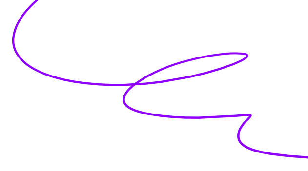
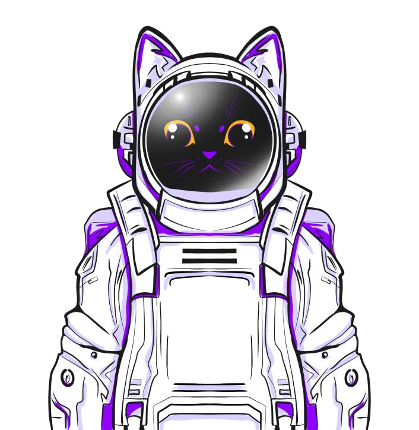

МЕДТЕХ • СИМУЛЯЦИОННОЕ ОБУЧЕНИЕ • ИМПОРТОЗАМЕЩЕНИЕ
МЕДСИМ (MedSim)
Интерактивный тренажёр клинического мышления для студентов и ординаторов
Отечественная кроссплатформенная веб-система симуляции клинических решений в реальном времени по актуальным Клиническим рекомендациям Минздрава РФ
ФГБОУ ВО СЗГМУ им. И.И. Мечникова Минздрава России
Автор и разработчик: Козлов Арсений Анатольевич (студент 3 курса лечебного факультета)
Научный руководитель: Расмагина Ирина Алексеевна, к.м.н., асс. кафедры пропедевтики
Наставник проекта: Бакулин Игорь Геннадьевич, д.м.н., проф., зав. кафедрой, гл. гастроэнтеролог СЗФО
1
ПРОБЛЕМА
ПЛАТФОРМА НТИ
Ключевой вызов высшего медицинского образования: острый разрыв между теоретическими знаниями и способностью принимать экстренные клинические решения в динамике.
45 000+
студентов и 20 000+ ординаторов в РФ
Дефицит самостоятельной курации
- >70% начинающих врачей приходят в ординатуру без опыта самостоятельного ведения экстренных и тяжёлых больных.
- Ограничения клиники: Студентов не допускают к реальным реанимационным решениям из-за высоких рисков для жизни пациентов.
- Следствие: Острый врачебный стресс на первых дежурствах, страх фатальной ошибки и неуверенность.
25%
дефектов в первичном звене
Статичность классического обучения
- Тесты на бумаге статичны: Студент не чувствует дефицита времени и угасания виталов (АД, ЧСС, SpO2) за 30 секунд.
- CustDev (87,2%): Обучающиеся подтвердили острую нехватку интерактивной практики принятия решений.
- Цена промедления: Ошибки сортировки и задержка неотложной терапии наносят колоссальный ущерб здоровью.
$50 000
в год за зарубежные аналоги
Недоступность существующих решений
- Body Interact и Full Code: Заблокированы из-за санкций, оторваны от стандартов РФ и стоят от $50 000/год.
- Манекены (3–15 млн ₽): Тренируют только мануальные навыки (СЛР, интубация), но не клиническое мышление врача.
- Решение «МедСим»: BYOD-доступ по Клиническим рекомендациям Минздрава РФ с любого смартфона/ПК в 5–10 раз дешевле.
2
РЕШЕНИЕ
ПЛАТФОРМА НТИ
ИНТЕРАКТИВНЫЙ ВЕБ-СИМУЛЯТОР КЛИНИЧЕСКИХ РЕШЕНИЙ
«МедСим» переносит обучающегося в реальные клинические условия с непрерывной динамикой состояния больного по стандартам Минздрава РФ
ОРИТ (ICU)
Экстренная реанимация
Таймер 12–15 мин, протокол ABCDE, динамика 7 виталов каждые 30 сек. Исходы: стабилизация или остановка сердца.
Приёмное отделение
Сортировка и маршрутизация
Дифференциальная диагностика под дефицитом времени, первичная стабилизация и выбор маршрута госпитализации.
Поликлиника
Амбулаторный приём
Приём без таймера, сбор анамнеза заболевания и жизни, назначение целевых анализов и формулировка диагноза.
Стационар
Суточный цикл курации
Утренний обход, лабораторный контроль, коррекция фармакотерапии, контроль полипрагмазии и критерии выписки.
79 верифицированных сценариев | 100% КР Минздрава РФ | <1.5 с запуск (PWA) | Модель BYOD

3
ТЕХНОЛОГИЧЕСКОЕ ЯДРО ПРОЕКТА
ПЛАТФОРМА НТИ
SIMULATION ENGINE
Движок динамической детериорации
Непрерывный пересчёт 7 виталов (АД, ЧСС, ЧДД, SpO2, ШКГ, боль, t°) с шагом 30 сек и валидация индекса тяжести SOFA-like (0–20 баллов).
PHARMACODYNAMICS MATRIX
Фармакодинамическая матрица
Моделирование эффектов 52 лекарственных препаратов с учётом латентного периода, терапевтического окна и парадоксальных реакций.
DETERMINISTIC DEBRIEFING
Алгоритмический дебрифинг
Автоматический аудит действий врача по Клиническим рекомендациям Минздрава РФ с детекцией фатальных ошибок и полипрагмазии.
NEURAL PATIENT MODULE
LLM «Виртуальный пациент»
Отечественные языковые модели (GigaChat / YandexGPT) для тренировки сбора анамнеза по Калгари-Кембриджской модели.
Критическая технология РФ: ИИ, цифровое био-моделирование и суверенное ПО
4
КОНКУРЕНТЫ И АНАЛОГИ
ПЛАТФОРМА НТИ
Сравнительный анализ подтверждает ключевое преимущество «МедСим» в 100% соответствии Клиническим рекомендациям Минздрава РФ и ценовой доступности для вузов.
| Критерий сравнения | «МедСим» (СЗГМУ, Россия) | Body Interact (Португалия) | Full Code Medical (США) | Роботы-манекены (РФ/импорт) |
|---|---|---|---|---|
| Соответствие КР Минздрава РФ | 100% (рубрикатор МЗ РФ, cr.minzdrav.gov.ru) | 0% (протоколы AHA, ERC, NICE) | 0% (клинические стандарты США) | Косвенное (зависит от преподавателя) |
| Язык и терминология | Русский язык, МКБ-10, терминология РФ | Английский (неполный машинный перевод) | Исключительно английский язык | Русский (голос оператора) |
| Доступность и платформа | Web/PWA: запуск <1.5 сек на любом ПК/смартфоне | Специализированные столы и терминалы | Мобильное приложение (риск блокировок) | Только в симуляционном центре |
| Стоимость лицензии для вуза | Доступная подписка (250–600 тыс. руб./год) | От $50 000 в год (недоступно к оплате) | От $30 000 в год (валютные ограничения) | От 3 000 000 до 15 000 000 руб. |
| Охват отделений | 4 отделения: ОРИТ, приёмное, поликлиника, стационар | Преимущественно скорая помощь и ОРИТ | Исключительно неотложная помощь (ER) | Изолированные мануальные навыки (СЛР) |
5
МОДЕЛЬ МОНЕТИЗАЦИИ, РЫНОК И ПОТРЕБИТЕЛИ
ПЛАТФОРМА НТИ
12,5 млрд ₽
TAM
Рынок симуляционного мед-обучения РФ и СНГ
1,8 млрд ₽
SAM
ПО для 100+ медвузов и 400+ колледжей
90 млн ₽
SOM
25 ведущих медвузов РФ (горизонт 3 лет)
B2G / B2B ЛИЦЕНЗИЯ ДЛЯ ВУЗОВ (ОСНОВНОЙ СЕГМЕНТ)
250 000 – 600 000 руб./год на кафедру
Пакетная подписка на факультет: кабинет преподавателя, аналитика успеваемости групп, банк контрольных и олимпиадных клинических кейсов.
B2C ИНДИВИДУАЛЬНАЯ ПОДПИСКА (ДОПОЛНИТЕЛЬНЫЙ СЕГМЕНТ)
290 – 490 руб./месяц для студентов и ординаторов
Индивидуальный доступ к расширенным сценариям, режим подготовки к первичной аккредитации врачей и персональный сертификат.
2025–26: Пилот в СЗГМУ (80+ чел.) ➔ 2026–27: 10–15 вузов РФ ➔ 2027+: Олимпиады РНМОТ

6
КОМАНДА И ПРОГРЕСС
ПЛАТФОРМА НТИ
Расмагина Ирина Алексеевна
Руководитель проекта
К.м.н., врач-гастроэнтеролог, асс. кафедры пропедевтики СЗГМУ. Автор 28 публикаций, 9 РИД, 4 грантов (в т.ч. РНФ 2024–2025). Руководство клинической методологией.
Бакулин Игорь Геннадьевич
Наставник проекта
Д.м.н., профессор, зав. кафедрой внутренних болезней СЗГМУ им. Мечникова, главный внештатный гастроэнтеролог СЗФО РФ, вице-президент РНМОТ.
Козлов Арсений Анатольевич
Соавтор, Архитектор UI/UX
Студент 3 курса лечебного факультета СЗГМУ (21 год). Проектирование веб-системы (React 18, Vite), 4 симуляционных отделения, база теории, дизайн-система.
Голощапов Михаил Михайлович
Соавтор, Разработчик движка
Студент 3 курса лечебного факультета СЗГМУ (19 лет). Математическое ядро детериорации (7 виталов, шаг 30 сек, SOFA-like), фармакоотклик, модуль LLM-пациента.
Компетенции: клиническая экспертиза кафедры + IT-хард-скиллы = защищённый РИД
7
ПАРТНЕРЫ
ПЛАТФОРМА НТИ
ОПОРНАЯ ОРГАНИЗАЦИЯ
ФГБОУ ВО СЗГМУ им. И.И. Мечникова Минздрава РФ
Кафедра пропедевтики внутренних болезней. Предоставление клинической базы, апробация тренажёра на выборке 80+ обучающихся, интеграция в учебные планы.
ВНЕШНЯЯ ВРАЧЕБНАЯ ЭКСПЕРТИЗА
Российское научное медицинское общество терапевтов (РНМОТ)
Методическое сопровождение соответствия стандартам терапии, верификация клинических кейсов, проведение межвузовских олимпиад под эгидой общества.
ФОКУС-ГРУППЫ И НАУЧНАЯ АПРОБАЦИЯ
Совет СНО СЗГМУ им. И.И. Мечникова (5 500+ участников)
Формирование репрезентативных фокус-групп, проведение CustDev, подготовка совместных научных публикаций ВАК/Scopus и докладов на конференциях.
ИНФОРМАЦИОННАЯ ДИСТРИБУЦИЯ
Партнёрские EdTech-сообщества (Школа Сеченова, MedVuza)
Информационный охват более 50 000 студентов и ординаторов медвузов РФ, совместные образовательные спецкурсы и пилотные запуски.
Ближайшие шаги: пилот на 80+ чел., Олимпиада по терапии, акт внедрения в учебный процесс
8
УРОВЕНЬ ГОТОВНОСТИ ТЕХНОЛОГИИ
ПЛАТФОРМА НТИ
ТЕКУЩИЙ СТАТУС — УГТ 5–6 (TRL 5–6)
Полнофункциональный веб-прототип (PWA), 79 оцифрованных сценариев, верифицирован математический движок детериорации (шаг 30 с) и фармакоматрица на 52 препарата. Пройдены испытания на кафедре.
ЦЕЛЕВОЙ СТАТУС — УГТ 7 (TRL 7)
Опытная эксплуатация прототипа в реальном образовательном процессе кафедры пропедевтики СЗГМУ им. Мечникова (80+ студентов и ординаторов), проведение олимпиад по кардиологии и терапии.
| Уровень готовности | Краткое описание | Артефакт |
|---|---|---|
| 1-3 | Формирование концепции, лабораторные исследования, создание макета | Научные статьи, отчеты о моделировании, письма заинтересованности от партнеров |
| 4-6 [ТЕКУЩИЙ] | Создание прототипа, подтверждение характеристик в лабораторных условиях (PWA, 79 кейсов) | Фото/видео работающего макета, протоколы успешных экспериментов на кафедре |
| 7 [ЦЕЛЕВОЙ] | Пилотирование проекта (опытные испытания на выборке 80+ обучающихся в СЗГМУ) | Видеодемонстрация работы прототипа в реальных условиях, отчет тестирования |
| 8 | Предсерийное производство | Акт о завершении пилотного проекта, отзыв пилотного заказчика |
| 9 | Серийное производство, коммерческое использование | Контракты на продажу, отзывы клиентов |
9
ПРОГРЕСС ЗА ВРЕМЯ АКСЕЛЕРАЦИИ
ПЛАТФОРМА НТИ
За время акселерационной программы проект совершил качественный переход от исследовательской идеи к масштабируемому программному продукту.
| До участия в акселерационной программе | После участия в акселерационной программе |
|---|---|
| УГТ 3–4: Теоретическая концепция, формулы модели детериорации на бумаге и черновые скрипты. | УГТ 5–6: Работающий веб-тренажер (PWA), 79 оцифрованных сценариев, 4 отделения, детериорация виталов в реальном времени. |
| Производственная готовность: Разрозненные прототипы интерфейса, ручная проверка кейсов. | Производственная готовность: Отказоустойчивая система (React 18, Vite, Three.js), запуск <1.5 сек, автоматический дебрифинг ошибок по КР Минздрава РФ, CI/CD. |
| Рыночная готовность: Несформированное ценностное предложение, отсутствие данных о спросе. | Рыночная готовность: Проведен CustDev (70+ студентов и ординаторов), подтверждена острая потребность (87.2%), разработана модель B2B/B2G подписок для медвузов. |
| Партнерства: Инициативная разработка двух студентов лечебного факультета без институционального статуса. | Партнерства: Наставничество зав. кафедрой проф. И.Г. Бакулина, поддержка к.м.н. И.А. Расмагиной, пилотирование на кафедре и олимпиадах СЗГМУ. |
10
ПЛАНЫ РАЗВИТИЯ
ПЛАТФОРМА НТИ
R&D И КЛИНИЧЕСКИЙ КОНТЕНТ
Расширение до 100+ кейсов и LLM-пациент
Добавление профиля «Гастроэнтерология», интеграция генеративного диалогового модуля «Виртуальный пациент» на отечественных LLM по Калгари-Кембриджской модели.
ЗАЩИТА ИНТЕЛЛЕКТУАЛЬНОЙ СОБСТВЕННОСТИ
Регистрация РИД в Роспатенте
Получение свидетельств о гос. регистрации программы для ЭВМ «МедСим» и базы данных клинических сценариев; патентование алгоритма детериорации виталов.
НАУЧНАЯ АПРОБАЦИЯ И ПУБЛИКАЦИИ
Пилотирование на 80+ обучающихся и статьи ВАК
Внедрение в олимпиады СЗГМУ по кардиологии и терапии; подготовка не менее 2 научных статей в журналах ВАК/Scopus и 3 докладов на всероссийских конференциях.
ИНВЕСТИЦИИ И МАСШТАБИРОВАНИЕ
Грант «Студенческий стартап» и выход в 5+ вузов
Подача заявки на грант ФСИ (1 млн руб.); масштабирование на медицинские университеты СЗФО в 2026–2027 гг.; интеграция в систему НМО.
Горизонт реализации: 100+ сценариев • 2 патента • Пилоты в 5+ медвузах РФ

11
ЗАПРОС
ПЛАТФОРМА НТИ
ФИНАНСИРОВАНИЕ ИНФРАСТРУКТУРЫ
Серверные мощности в РФ и API отечественных LLM
Аренда защищённых отечественных серверов для бесперебойной работы при массовых олимпиадах (до 200 одновременных сессий); токены API отечественных нейросетей.
НЕТВОРКИНГ И ИНСТИТУЦИОНАЛЬНОЕ СОДЕЙСТВИЕ
Выход на проректоров медвузов РФ и РОСОМЕД
Содействие Платформы НТИ в контактах с проректорами по учебной работе медицинских вузов; взаимодействие с Федеральным центром симуляционного обучения.
МЕНТОРСТВО И B2G-ЭКСПЕРТИЗА
Упаковка B2G-контрактов и защита РИД
Экспертная помощь в структурировании продаж университетских лицензий, юридическое сопровождение защиты интеллектуальных прав и лицензирования.
МЕДИА И ФЕДЕРАЛЬНЫЙ PR
Освещение в ресурсах НТИ и Минздрава РФ
Информационная поддержка проекта в федеральных каналах экосистемы НТИ, Минздрава и Минобрнауки; привлечение вузов-партнёров к межвузовским олимпиадам.
Цель запроса: быстрый пилотный охват 15+ медвузов РФ и интеграция в стандарты

12
ЭКСПЕРТНОЕ ЗАКЛЮЧЕНИЕ
Бакулин Игорь Геннадьевич
Д.м.н., профессор, зав. кафедрой внутренних болезней СЗГМУ, главный гастроэнтеролог СЗФО, вице-президент РНМОТ
«Проект «МедСим» обладает безусловной научной и клинической ценностью. Строгое соответствие актуальным Клиническим рекомендациям Минздрава РФ и динамический пересчёт витальных функций позволяют обучающимся преодолеть разрыв между теорией и практикой. Рекомендую к внедрению в учебный процесс и олимпиады.»
Расмагина Ирина Алексеевна
К.м.н., врач-гастроэнтеролог, асс. кафедры пропедевтики СЗГМУ им. Мечникова, руководитель грантов РНФ
«Теоретическая реализуемость математического ядра детериорации доказана. Использование защищённых отечественных LLM для диалога виртуального пациента обеспечивает формирование деонтологических навыков и суверенитет ПО.»
Экспертиза РОСОМЕД & HealthNet НТИ
Специалисты по медицинскому симуляционному обучению и коммерциализации
««МедСим» эффективно закрывает пустующую нишу между бумажными тестами и дорогостоящими манекенами: платформа тренирует скорость и логику принятия решений в динамике перед манипуляциями с высокой рентабельностью (>60%).»
Все экспертные заключения верифицированы и внесены в ИС «Эксперты НТИ»
13